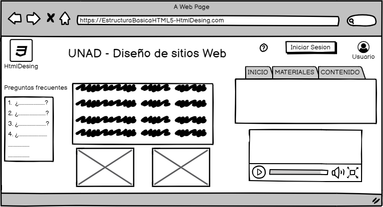

OVI HtmlDesing - Estructura basica de HTML5
1. OBJETIVO GENERAL:
El siguiente OVI es presentado a la UNAD con el fin
de brindarle la suficiente informacion acerca de la estructura basica
HTML5 para fortalecer y aumentar los contenidos educativos del curso
Diseño de sitios web.
1.1 Obejtivos especificos:
- Dar a conocer y explicar las etiquetas basicas de HTML5
- Reconcer los atributos de las etiquetas basicas de HTML5
- Ientificar los elementos en la estructura basica de HTML5
2. MATERIALES
2.1 Maqueta del OVI

2.2 LINKS DE APOYO
2.2.1 IMAGENES
2.2.2 VIDEOS
2.2.3 TEXTOS
3. CONTENIDO
En HTML existe un esqueleto básico, que todos debemos de conocer porque se viene usando desde los inicios del lenguaje.
Nos referimos a la conocida estructura del HEAD / BODY.
Toda jerarquía de etiquetas comienza por < HTML > y dentro tenemos dos grandes bloques < HEAD > y < BODY >.
Hasta hace poco dentro del < BODY > se colocaban etiquetas como < DIV >, < SPAN >, < B >, etc. pero todas las etiquetas que usábamos decían poco a aquel sistema que las leyera.
¿Qué significa < DIV >? pues simplemente que estamos colocando una «división» pero no especifica para qué se usa esa división.
Quizás < P > tiene algo más de significado,
pero no deja de ser un párrafo a secas, sin decirte qué tipo de información va a contener ese párrafo.
Hoy, la recomendación es usar otro conjunto de etiquetas que sí nos aportan un significado al contenido que engloban. Pero esto no quiere decir que las etiquetas antiguas se dejen de usar,
sino que ahora tenemos otra serie de etiquetas con valor semántico, que vienen a aportar nuevas facilidades que te resumiremos en el siguiente punto.
De momento, analicemos estas etiquetas nuevas con valor semántico con la estructura de una web en mente.
HTML define un total de 91 etiquetas, de las cuales 10 se consideran obsoletas.
Sin embargo, una etiqueta por sí sola a veces no contiene la suficiente información para estar completamente definida.
Para ello contamos con los atributos: pares nombre-valor separados por "=" y escritos en la etiqueta inicial de un elemento después del nombre del elemento.
El valor puede estar encerrado entre "comillas dobles" o 'simples'.
Existen, también, algunos atributos que afectan al elemento por su presencia en la etiqueta de inicio, como puede ser el atributo ismap para el elemento  .
.
Esta sería la estructura general de una línea de código en lenguaje HTML:
< a href="http://www.enlace.com" target="_blank" > Ejemplo de enlace < /a >
Donde:
- < a > es la etiqueta o tag inicial y < /a > la etiqueta de cierre
- href y target son los atributos
- http://www.enlace.com y _blank son las variables
- Ejemplo de enlace es el contenido
3.1 TIPOS DE ATRIBUTOS
Aunque cada una de las etiquetas HTML define sus propios atributos, encontramos algunos comunes a muchas o casi todas las etiquetas,
que se dividen en cuatro grupos según su funcionalidad:
- Atributos básicos
- Atributos de internacionalización
- Atributos de eventos
- Atributos de foco
3.1.1 Atributos basicos:
Los atributos básicos se utilizan en la mayoría de etiquetas HTML y XHTML, aunque adquieren mayor sentido cuando se utilizan hojas de estilo en cascada (CSS):
- id="texto" Establece un indicador único a cada elemento
- class="texto" Establece la clase CSS que se aplica a los estilos del elemento
- style="texto" Aplica de forma directa los estilos CSS de un elemento
- title="texto" Establece el título del elemento (Mejora la accesibilidad)
3.1.2 Atributos de internacionalizacion:
Estos atributos se utilizan en aquellas páginas que muestran sus contenidos en varios idiomas y las que quieran indicar de forma explícita el idioma de sus contenidos:
- lang="codigo" Indica el idioma del elemento
- xml:lang="codigo" Indica el idioma del elemento, aunque tiene más prioridad que el atributo anterior y es obligatorio si se incluye el atributo lang
- dir Indica la dirección del texto
3.1.3 Atributos de eventos:
- onclick Ejecuta la acción cuando se realiza un clic sobre el elemento
- ondblclick Ejecuta la acción cuando se realiza un doble clic sobre el elemento
- onmousedown Ejecuta la acción cuando se detecta el botón pulsado del ratón
- onmouseup Ejecuta la acción cuando se detecta que se ha soltado el botón del ratón
- onmousemove Ejecuta la acción cuando se detecta el movimiento del ratón sobre el elemento
- onmouseout Ejecuta la acción cuando el ratón abandona el elemento
- onmouseover Ejecuta la acción cuando se detecta que el ratón se sitúa sobre el elemento
3.1.4 Atributos de foco:
- accesskey="letra" Establece una tecla de acceso rápido a un elemento HTML
- tabindex="numero" Establece la posición del elemento en el orden de tabulación de la página (valor entre 0 y 32.767)
- onfocus, onblur Controlan los eventos JavaScript que se ejecutan cuando el elemento obtiene o pierde el foco
3.2 ELEMENTOS
Además de etiquetas y atributos, HTML define el término elemento para referirse a las partes que componen los documentos HTML.
El lenguaje HTML clasifica a todos los elementos en dos grupos: elementos en línea o inline elements y elementos en bloque o block elements.
La diferencia entre ambos viene dada por el modelo de contenido, por el formato y la dirección. La principal diferencia entre los dos tipos de elementos es la forma en la que ocupan el espacio disponible en la página:
los elementos en bloque siempre empiezan en una nueva línea y ocupan todo el espacio disponible hasta el final de la línea, mientras que los elementos en línea sólo ocupan el espacio necesario para mostrar sus contenidos.
Elementos en linea
- a Define un anchor (anclaje o hipervínculo)
- abbr Marca las abreviaturas del texto y proporciona el significado de esas abreviaturas
- acronym Marca las siglas o acrónimos del texto y proporciona el significado de esas siglas
- b Indica que el texto debe ser representado e bold (o negrita)
- basefont Permite cambiar algunas propiedades del texto
- bdo Anulación del algoritmo bidireccional (en referencia a la dirección de la escritura)
- big Muestra el texto marcado con un tamaño de fuente más grande
- br line break - ruptura (o salto) de línea
- cite Se emplea para marcar una cita o una referencia a otras fuentes
- code Delimita el texto considerado un fragmento de código fuente
- dfn Marca las definiciones de ciertos términos y proporciona el significado de éstos
- em emphasis – énfasis
- font Indica el tamaño, color, o fuente del texto que contiene
- i Muestra el texto marcado con un estilo en cursiva o itálica
- img Imagen
- imput Posibilita y define la introducción de datos en el formulario
- kbd Indicar al usuario el texto que debe introducir
- label Asocia un rótulo o etiqueta a un campo de un formulario
- q short quotations - cita corta
- s strike-through - tachado
- samp Sirve identificar una muestra de los caracteres que forman la salida o el resultado de algún proceso
- select Crea un contenedor mediante el cual el usuario puede seleccionar de una lista de opciones
- small Aplica al texto marcado un tamaño de fuente más pequeño
- span Es un contenedor genérico en línea. Sirve para para aplicar estilo al texto o agrupar elementos en línea
- strike Muestra el texto tachado con una linea horizontal
- strong Marca con especial énfasis las partes más importantes de un texto
- sub Crea un subíndice posicionando el texto marcado por debajo de la linea
- sup Crea un superíndice posicionando el texto marcado por encima de la linea
- textarea Crea un control de entrada de texto multilínea
- tt Representa como texto de teletipo o ancho fijo
- u Muestra el texto subrayado
- var Marca variables de programas y similares
Elementos en bloque
- address Contiene la información de contacto con los autores del documento
- blockquote Indica que el texto que encierra es una cita textual de otro texto externos
- center Crea una caja en bloque con el contenido centrado
- dir Crea listas multicolumna de directorios
- div Es un elemento en bloque genérico y sirve para crear secciones o agrupar contenidos
- dl Crea una lista de definiciones
- fieldset Permite organizar en grupos los campos de un formulario
- form Actúa como contenedor de controles. Representa un formulario
- h1, h2, h3, h4, h5, h6 Crea un encabezado o título de primer, segundo, tercer, cuarto, quinto o sexto nivel para una sección del documento respectivamente
- hr Crea una linea de separación horizontal
- isindex Crea un control de entrada de texto de una línea
- menu Crea un menú
- noframes (sin marcos) - aporta contenidos alternativos a los marcos
- nos-cript Contenedor de contenido alternativo para la representación no basada en scripts
- ol Crea una lista ordenada
- p Párrafo
- pr Permite que el texto conserve el formato y sea mostrado tal cual
- table Tabla
- ul Crea una lista no ordenada
Jose Alberto Salcedo - Diseñador web
HtmlDesing
{kind=link}
{kind=link}